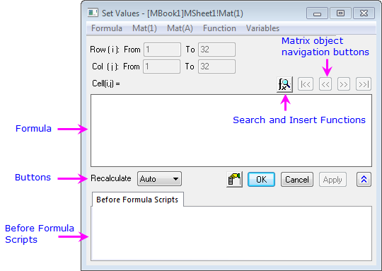
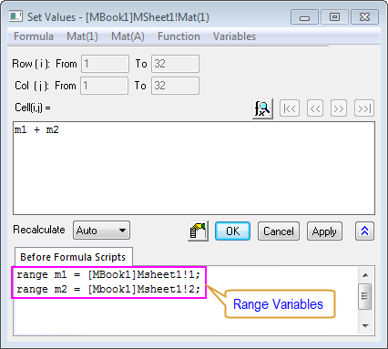
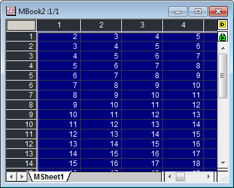

Ausdrücke in den Dialog Werte setzen eingeben
SetMatVal-EnterExpression
Grundlagen der Ausdrücke
Der im Dialog Werte setzen verwendete Ausdruck sollte der Syntax von LabTalk folgen. Der Ausdruck kann arithmetische Operatoren, Bereichsvariablen, Standardfunktionen von LabTalk und benutzerdefinierte Funktionen etc. enthalten. Es gibt zwei Stellen, um Ausdrücke zu definieren:
- Formel Hier kann nur ein einzeiliger Ausdruck eingegeben werden. Beachten Sie, dass dieser Ausdruck der rechte Teile einer vollständigen Anweisung ist:
Cell(i,j) = c1*sin(i) + c2*cos(j).
- Skript vor Anwenden der Formel Hier können mehrzeilige LabTalk-Skripte eingegeben werden, die ausgeführt werden, bevor Matrixwerte mit der Formel im Bearbeitungsfeld Formel gesetzt werden.
- 
 | - Origin bietet viele Standardfunktionen über das Menü Funktion, die direkt im Ausdruck verwendet werden können. Sie können auch selbst eine benutzerdefinierte Funktion erstellen.
- Die Buchstaben i und j sind Systemvariablen, die den aktuellen Zeilenindex und Spaltenindex speichern, während die Buchstaben x und y die aktuellen X- und Y-Werte darstellen. Sie können sie im Bearbeitungsfeld Formel verwenden.
|
Ausdrücke nur in Formel eingeben
Sie können einen einzeiligen Ausdruck im Bearbeitungsfeld Formel eingeben und das Feld Skript vor Anwenden der Formel leer lassen. Der Ausdruck im Bearbeitungsfeld Formel kann Standardfunktionen und benutzerdefinierte Funktionen beinhalten. Im Folgenden sehen Sie ein Beispiel zur Verwendung dieser Funktionen.
Beispiel 1:
- Öffnen Sie eine neue Matrix. Klicken Sie dann auf das Symbol in der oberen rechten Ecke der Matrix und wählen Sie Hinzufügen, um ein neues Matrixobjekt hinzuzufügen.
- Wählen Sie Matrix: Werte setzen, um den Dialog Werte setzen zu öffnen. Geben Sie dann i in dem Bearbeitungsfeld Formel ein und klicken Sie auf die Schaltfläche Anwenden, um Daten dafür zu erzeugen.
- Klicken Sie auf die Schaltfläche , um Werte für das zweite Matrixobjekt zu setzen. Wählen Sie Funktion: Mathematik: Cos(x) im Menü, um cos() zum Bearbeitungsfeld der Formel hinzuzufügen. Der Cursor wird innerhalb der Klammern positioniert. Wählen Sie Mat(1): Mat(1) im Menü. Der Ausdruck ist dann cos(Mat(1)). Klicken Sie auf die Schaltfläche OK, um die Formel auszuführen.
Ausdrücke nur in Skript vor Anwenden der Formel eingeben
Sie können mehrzeilige LabTalk-Skripts im Bearbeitungsfeld Skript vor Anwenden der Formel eingeben und das der Formel leer lassen. Zusätzlich zu den Standardfunktionen und benutzerdefinierten Funktionen werden hier auch alle anderen LabTalk-Skripts unterstützt. Sie können also Bereichsvariablen, Zeichenkettenvariablen, Schleifen und X-Funktionen mit Zugriff auf LabTalk verwenden.
Das folgende Beispiel erhält die gleichen Ergebnisse wie Beispiel 1.
Beispiel 2:
- Öffnen Sie eine neue Matrix. Klicken Sie dann auf das Symbol in der oberen rechten Ecke der Matrix und wählen Sie Hinzufügen im Kontextmenü, um ein neues Matrixobjekt hinzuzufügen.
- Wählen Sie Matrix: Werte setzen, um das Dialogfeld Werte setzen zu öffnen. Geben Sie dann i in dem Bearbeitungsfeld Formel ein und klicken Sie auf die Schaltfläche Anwenden, um Daten dafür zu erzeugen.
- Klicken Sie auf die Schaltfläche , um Werte für das zweite Matrixobjekt zu setzen. Geben Sie Mat(2)=cos(Mat(1)) in Skript vor Anwender der Formel ein und klicken Sie auf die Schaltfläche OK, um die Daten zu erzeugen.
Ausdrücke in Spaltenformel und Skript vor Anwenden der Formel eingeben
Häufig sind Skripte in beiden Feldern erforderlich, Formel und Skript vor Anwenden der Formel. Sie können beispielsweise Bereichsvariablen Skripts vor Anwenden der Formel definieren und sie dann in Formel verwenden.
Beispiel 3:
- Erstellen Sie ein neues Projekt.
- Erstellen Sie eine neue Matrix mit dem Namen MBook1. Klicken Sie dann auf das Symbol in der oberen rechten Ecke der Matrix und wählen Sie Hinzufügen im Kontextmenü, um ein neues Matrixobjekt hinzuzufügen. Sie wird mit einigen Zahlen gefüllt, die später Verwendung finden.
- Markieren Sie MBook1. Klicken Sie mit der rechten Maustaste und wählen Sie aus dem Kontextmenü Werte setzen. Geben Sie dann i im Bearbeitungsfeld Formel ein. Klicken Sie auf die Schaltfläche Anwenden, um Daten dafür zu erzeugen.
- Klicken Sie auf die Schaltfläche , um Werte für das zweite Matrixobjekt festzulegen. Geben Sie j in das Bearbeitungsfeld Formel ein. Klicken Sie auf die Schaltfläche OK, um Daten dafür zu erzeugen.
- Öffnen Sie eine weitere Matrix. Sie sollte den Namen MBook2 haben.
- Klicken Sie mit der rechten Maustaste auf das leere, graue Feld oben links von MBook2 und wählen Sie Werte setzen im Kontextmenü, um das gleichnamige Dialogfeld Werte setzen aufzurufen. Dann werden zwei Bereichsvariablen definiert, die auf die zwei Matrixobjekte von MBook1 in Skript vor Anwenden der Formel verweisen. Verwenden Sie diese in dem Bearbeitungsfeld Formel, wie im folgenden Screenshot gezeigt:
- 
- Klicken Sie auf die Schaltfläche OK, um Daten für MBook2 zu erzeugen. Die Ergebnisse sollten folgendermaßen aussehen:
- 